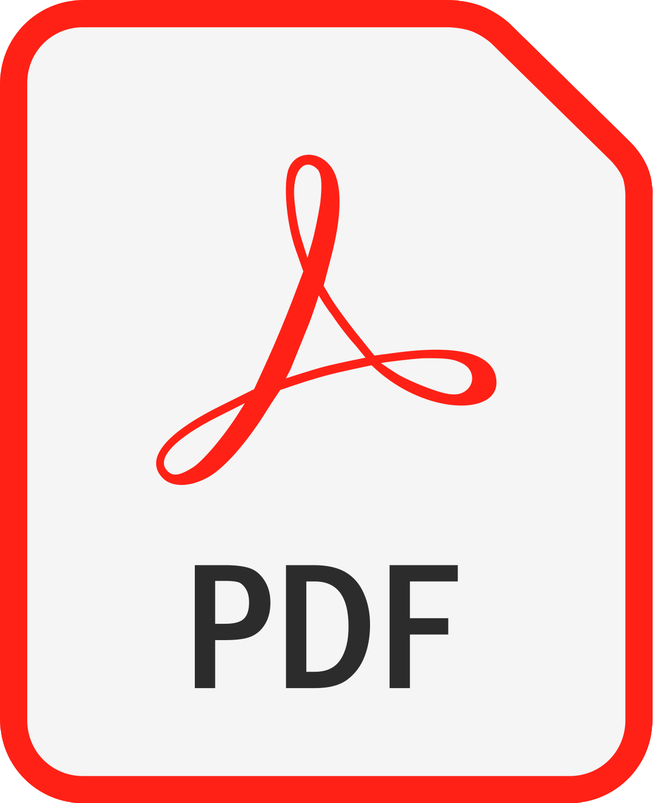

Mi nombre es Kevin Usnayo Navarro, tengo 27 años y estoy cursando el 5to. ciclo de la carrera de Ciencias de la Comunicación en la Universidad Tecnológica del Perú (UTP). Vivo en Lima, en el distrito del Rímac. Mi gusto por la carrera se dió gracias a mi tío paterno, él trabaja en el canal Latina Televisión en el área de Coordinación Comercial y cuenta con una empresa que realiza videos institucionales a empresas. Me gusta lo que realiza y lo que me cuenta. Mi primera meta es terminar la universidad y la segunda es poder trabajar en una empresa fuera de Lima gracias a mi carrera.
SOBRE MI

Sobre mi
Mis hobbies
Soy una persona que le gusta estar siempre con sus audífonos ya que me gusta mucho la música. Me gusta escuchar música en todo momento, siento que sin la música no se podría hacer las cosas con mucho ánimo. Mis generos favoritos son el rock, el hip hop y el indie.
Además, me gusta mucho los videojuegos, me gusta jugar con mis amigos. Siempre nos comunicamos para coordinar la hora para conectarnos y jugar en escuadra. También, me gusta realizar cualquier actividad deportiva, ya sea con la pelota o salir a montar bicicleta. Desgraciadamente por la pandemia no se puede realizar la actividad que más me gusta de todas, el fútbol.
Mis habilidades
Me considero una persona que puede desarrollarse en cualquier área y desempeñar tareas nuevas de forma correcta. Gracias a las experiencias que he tenido durante toda mi carrera laboral y universitario, hicieron que pueda aportar nuevas ideas y soluciones rápidas ante un problema. Me adapto y aprendo rápido para estar en el mismo objetivo que tiene la empresa.
Programas que utilizo
ADOBE PREMIERE

ADOBE ILLUSTRATOR
ADOBE PHOTOSHOP
ADOBE INDESIGN
SUBLIME TEXT
OBS STUDIO
Mi Cv

Curriculum vitae
VER